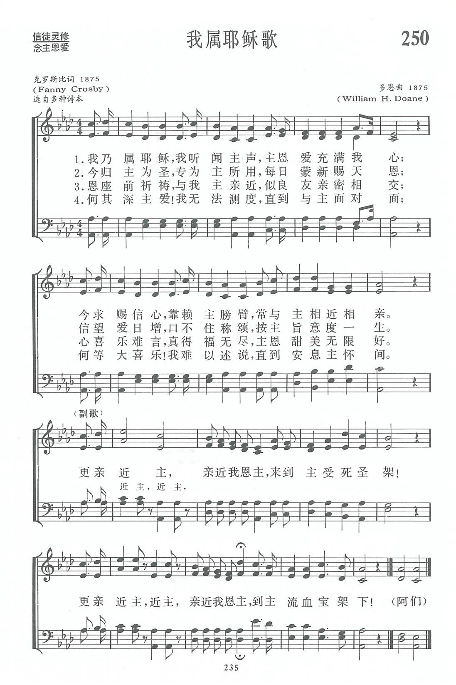

|
|
|
|
1 I am Thine, O Lord, I have heard Thy voice,
Chorus:
2 Consecrate me now to Thy service, Lord,
3 O the pure delight of a single hour
4 There are depths of love that I cannot know |
我乃属耶稣 我听闻主声 主恩爱充满我心 今求赐信心 靠赖主膀臂 常与主相近相亲 今归主为圣 专为主所用 每日蒙新赐天恩 信望爱日增 口不住称颂 按主旨意度一生 恩座前祈祷 与我主亲近 似良友亲密相交 心喜乐难言 真得福无尽 主恩甜美无限好 何其深主爱 我无法测度 直到与主面对面 何等大喜乐 我难以述说 直到安息主怀间 chorus 更亲近主 亲近我恩主 来到主受死圣架 更亲近主 近主 亲近我恩主 到主流血宝架下 阿门 |
|
https://www.zanmeishige.com/tab/13923.html?songbook=1&index=250

|
|
|
|
|


我乃屬耶穌 https://youtu.be/H25F9hfKZOs -
Draw Me Nearer · Guy Penrod
https://youtu.be/3ZiI_bpxmB4 - I AM THINE O LORD Hymn DRAW ME NEARER NEARER BLESSED LORD
Lyrics Words text Sing Along Song
https://youtu.be/7xFGr9USg_k
| Text: | I Am Thine, O Lord |
| Author: | Fanny J. Crosby |
| Tune: | I AM THINE |
| Composer: | William H. Doane |

Tune Information
| Title: | [I am Thine, O Lord, I have heard Thy voice] |
| Composer: | W. Howard Doane (1875) |
| Meter: | 10.7.10.7.9.7.11.7 |
| Incipit: | 34322 23211 17666 |
| Key: | A♭ Major |
| Copyright: | Public Domain |

第250首 我属耶稣歌 DRAW ME NEARER _克罗斯比
经文：“良人属我，我也属他”(歌2：16)。
这首诗又是著名盲诗人克罗斯比与威廉.多恩(他们二人事略参阅第11首)合作成功的福音圣诗。
有一次，克罗斯比来到多恩(见第3首注①)家里作客。他们讨论了“信徒怎样与神接近”这个题目。当天晚上克罗斯比即根据希伯来书第l0章第22节“我们心中天良的亏欠已洒去，身体用清水洗净了，就当存着诚心和充足的信心来到面前”，写成了这首《我属耶稣歌》，题为《更亲近主》。
第一节一开始就确定了我们是属于主的，可以常与主亲相近；既然如此，
第二节就说到我们当归主为圣，专为主用；
第三节讲到属主的人当常祈祷，以灵与主相交的甘甜和乐；
第四节较深刻地体验到主爱深广是人们难以测度、难以述说，直到安息主怀才明白。
这是信徒追求灵性长进的过程。
多恩特为这首诗谱写了《我是主的》这个曲调。1875年在他和劳里牧师合编的《主日学圣诗集》中首先发表后传遍全球。
Words: Frances Jane (“Fanny”) Crosby (b. Mar. 24, 1820;
d. Feb. 12, 1915)
Music: William Howard Doane (Feb. 3, 1832; d. Dec. 23,
1915)
Links:
Wordwise Hymns (W.
H. Doane)
The Cyber
Hymnal
Note: On Wordwise Hymns, I don’t have an article specifically on Draw Me Nearer (sometimes called I Am Thine, O Lord, using the opening line). The link to Mr. Doane will tell you a little about the composer of the tune.
Howard Doane was a frequent collaborator with Fanny Crosby, writing tunes for such still-popular hymns of hers as:
Safe in the Arms of Jesus
Rescue the Perishing
Pass Me Not, O Gentle Saviour
Saviour, More Than Life to Me
Jesus, Keep Me Near the Cross
Not only did the two servants of God work together many times. They were also good friends, and Fanny greatly enjoyed visiting the Doane family in Cincinnati, Ohio. The Christian fellowship enjoyed at such times was a rich blessing for all.
It was on one such occasion in 1875 that the hymn, Draw Me Nearer, was written. They were sitting on the front porch of the Doane home, in the late afternoon, watching a beautiful sunset, described for Fanny, in her blindness, by the others. Howard Doane began to speak of a sense of the nearness of God in the still of the evening. While he was speaking, some lines of verse leaped into Fanny’s mind. She asked her friend if he’d write them down while she dictated them. The poem is our hymn. The next day, Mr. Doane composed a tune to fit.
This hymn beautifully answers the “What now?” question of the Christian life. In the opening words we have the believer’s confession: “I am Thine, O Lord.” So, what’s next? What should be the aspirations and goals of the child of God?
First (CH-1), when we come to know the Lord, by faith, there’s a desire to be in closer fellowship with Him. We say, with the psalmist, “It is good for me to draw near to God” (Ps. 73:28). So, “Let us draw near with a truth heart in full assurance of faith” (Heb. 10:22). We have this certain promise from the Word of God: “Draw near to God and He will draw near to you” (Jas. 4:8).
In this richness of fellowship with the Lord, we will also have a desire to serve Him more effectively, and we’ll dedicate ourselves to His service, for His greater glory (CH-2). To dedicate or consecrate, in a Christian context, means to be set apart for God, to be reserved for His use. In practical terms, His will becomes our will. We will awaken with the thought expressed so simply by missionary author Elizabeth Elliot: “I have only one thing to do today–the will of God.”
In our walk with God we’ll have a growing delight in the privilege of prayer (CH-3). However, there will be an increasing sense that there is more and better yet to come, a richer fellowship in heaven than we could ever know down here (CH-4). “Now we see in a mirror, dimly, but then face to face. Now I know in part, but then I shall know just as I also am known” (I Cor. 13:12).
CH-1) I am Thine, O Lord, I have heard Thy voice,
And it told Thy love to me;
But I long to rise in the arms of faith
And be closer drawn to Thee.
Draw me nearer, nearer blessèd Lord,
To the cross where Thou hast died.
Draw me nearer, nearer, nearer blessèd Lord,
To Thy precious, bleeding side.
Questions:
1) Is there something in your life, or your family’s life that it would
be meaningful to specifically dedicate to the Lord? If so, how will you
go about this?
2) How will the life of a dedicated Christian differ from that of one who’s lukewarm about the things of Christ?
Links:
Wordwise Hymns (W.
H. Doane)
The Cyber
Hymnal
https://wordwisehymns.com/2012/02/24/draw-me-nearer/